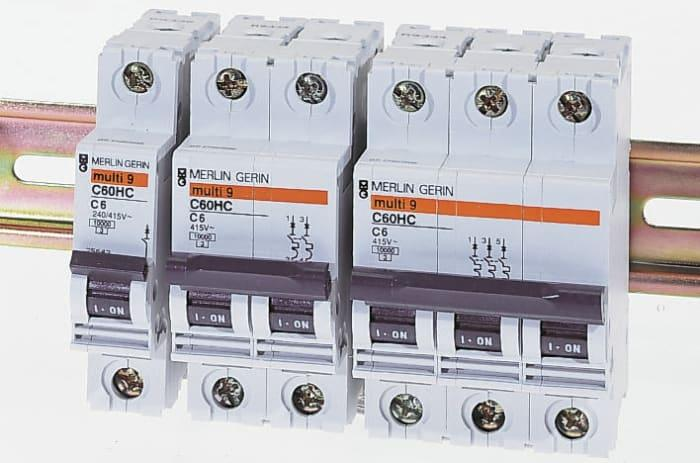
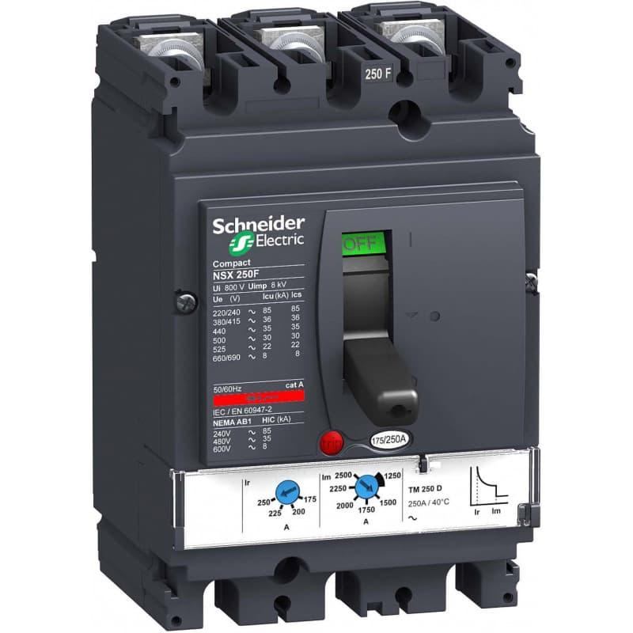
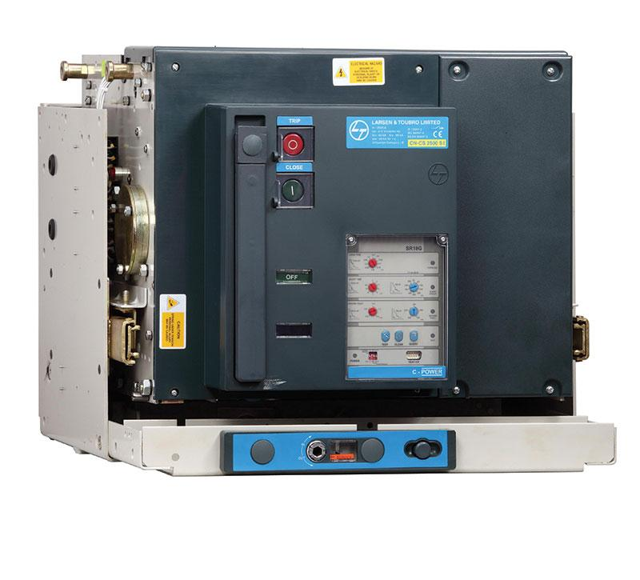
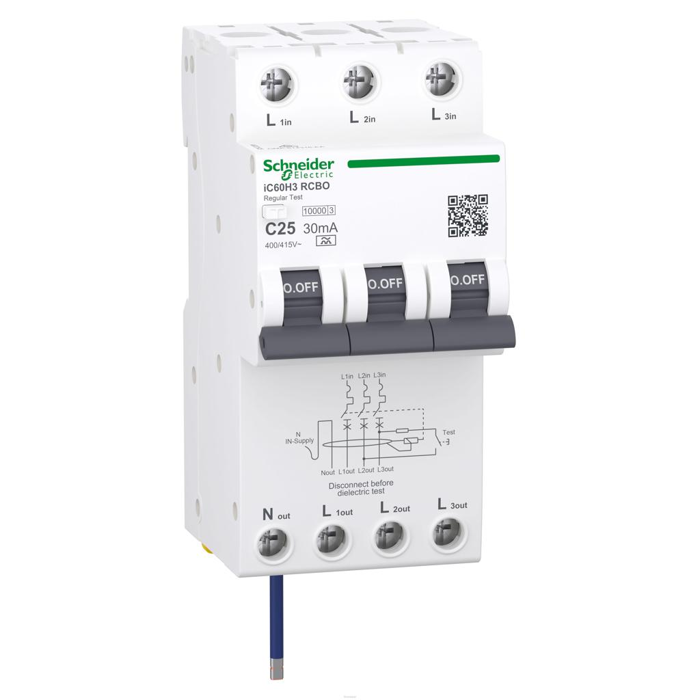
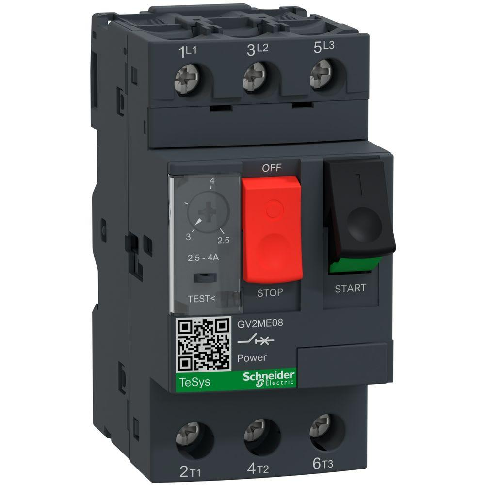

1. Purpose and role of circuit breakers
A circuit breaker is a protective switching device designed to make, carry, and interrupt current under specified normal and abnormal circuit conditions. Depending on its design and protective functions, it can disconnect a circuit during overloads, short circuits, earth faults, or other defined fault conditions.
Circuit breakers are widely used in industrial control panels, power distribution boards, motor control centers, machine panels, PLC power distribution, HVAC systems, and industrial automation installations.
Unlike a conventional fuse, which must be replaced after operation, a circuit breaker can generally be reset after the fault has been identified and corrected. However, resetting it without investigating the cause can simply recreate the fault, sometimes with considerably more excitement than the maintenance team requested.
1.1 Main functions
- Protect conductors and equipment against specified overcurrent conditions.
- Interrupt short-circuit current within the device's rated capabilities.
- Provide switching and isolation functions where the device is designed and approved for them.
- Protect individual branches so that a fault does not unnecessarily interrupt the complete installation.
- Support coordinated protection between incoming supplies, distribution circuits, and machine loads.
- Provide a defined means of disconnecting equipment for maintenance when the installation's isolation requirements are satisfied.
1.2 What a circuit breaker does not automatically do
| Condition | Protection capability |
|---|---|
| Overload | Provided when the breaker includes suitable overload protection and is correctly selected. |
| Short circuit | Provided when the interrupting rating and application conditions are suitable. |
| Earth fault | Depends on the breaker type, trip functions, grounding arrangement, and fault current. |
| Electric shock from every possible contact | Not guaranteed by an ordinary overcurrent breaker. |
| Undervoltage | Requires an appropriate undervoltage release or monitoring arrangement if protection is needed. |
| Phase loss | Requires suitable phase or motor monitoring when the application demands it. |
| Arc fault at low current | May not be detected by conventional overcurrent protection. |
| Equipment overheating without overcurrent | Requires suitable thermal sensors or other protective functions. |
| Unsafe isolation caused by backfeed | Requires proper isolation of every relevant energy source and verification. |
2. Basic operating principle
A circuit breaker carries normal current through its contacts and current-carrying conductors. A fault-detection or trip mechanism responds when current or another monitored condition exceeds the device's specified limits.
The operating mechanism releases stored mechanical energy to separate the contacts. When current is interrupted, an arc can form between the separating contacts. The breaker uses an arc-control system to extinguish the arc safely within its rated interruption capability.
2.1 Basic operating sequence
Normal operation
↓
Current flows through closed contacts
↓
Fault or abnormal condition occurs
↓
Trip mechanism detects the condition
↓
Operating mechanism opens the contacts
↓
Arc forms between separating contacts
↓
Arc-control system extinguishes the arc
↓
Circuit current is interrupted
↓
Fault is investigated before reset
The trip mechanism, contact system, arc chamber, and operating mechanism must work together. A breaker that trips mechanically but cannot interrupt the available fault current safely is not suitable for that circuit.
3. Main components of a circuit breaker
| Component | Function |
|---|---|
| Fixed and moving contacts | Carry current when closed and separate to interrupt the circuit. |
| Operating mechanism | Opens and closes the contacts and may store mechanical energy. |
| Thermal trip element | Provides time-delayed overload response in applicable breaker designs. |
| Magnetic trip element | Provides rapid response to sufficiently high current in applicable designs. |
| Electronic trip unit | Measures current and applies configured or predefined protection characteristics. |
| Arc chute or arc chamber | Controls, divides, cools, and extinguishes the arc. |
| Trip latch | Releases the mechanism when a protective function operates. |
| Terminals | Provide connections to incoming and outgoing conductors. |
| Operating handle | Provides manual ON, OFF, and trip indication positions as designed. |
| Auxiliary contacts | Report breaker status to control systems. |
| Shunt-trip accessory | Trips the breaker when an external electrical command is applied. |
| Undervoltage release | Trips or prevents closing when the supply voltage falls below specified conditions. |
| Trip indication contact | Signals that the breaker has tripped, depending on the accessory design. |
Not every breaker includes every component. The internal construction and available accessories depend on the breaker family and rating.
4. Main types of circuit breakers

4.1 Miniature circuit breaker (MCB)
Common in low-voltage final circuits, control circuits, and small distribution branches. MCBs generally use thermal and magnetic trip mechanisms. Selection depends on current rating, trip curve, pole configuration, and short-circuit rating.

4.2 Molded case circuit breaker (MCCB)
Used for higher-current feeders, industrial distribution, and machine incomers. Depending on the model, an MCCB may offer fixed or adjustable thermal-magnetic protection, electronic trip functions, and a range of accessories.

4.3 Air circuit breaker (ACB)
Common in low-voltage main distribution and high-current switchgear. ACBs often support advanced electronic protection, configurable settings, drawout arrangements, and maintenance-related accessories.

4.4 RCCB and RCBO
An RCCB detects residual current imbalance and generally requires separate overcurrent protection. An RCBO combines residual-current protection with overcurrent protection. These devices serve different protective purposes from an ordinary MCB.

4.5 Motor protection circuit breaker (MPCB)
Designed for suitable motor circuits, with functions that may include adjustable overload protection and short-circuit protection. Its ratings and coordination must match the motor starter arrangement.
Other important types include vacuum circuit breakers and SF6 circuit breakers, mainly used in medium- and high-voltage systems. They are different from ordinary low-voltage panel breakers in construction, insulation, arc interruption, and application.
5. MCB, MCCB, and ACB comparison
| Parameter | MCB | MCCB | ACB |
|---|---|---|---|
| Typical application | Small branch circuits | Industrial feeders and machine supplies | Main low-voltage distribution |
| Current range | Generally lower | Generally wider and higher | Commonly high-current distribution |
| Trip adjustment | Commonly fixed | Fixed or adjustable, depending on model | Commonly adjustable electronic trip |
| Protection mechanism | Commonly thermal-magnetic | Thermal-magnetic or electronic | Commonly electronic |
| Accessories | Model-dependent | Often extensive | Often extensive |
| Maintenance | Generally limited to inspection and replacement when required | Model-dependent inspection and service | May require scheduled inspection and specialized service |
| Installation | Commonly DIN rail | Fixed or other manufacturer-approved mounting | Fixed or drawout switchgear arrangements |
| Fault interruption | Must match prospective fault current | Must match prospective fault current | Must match prospective fault current and system conditions |
These are typical distinctions, not universal limits. The manufacturer's technical data governs the actual device.
6. Thermal and magnetic tripping
Many MCBs and some MCCBs use thermal-magnetic protection.
6.1 Thermal trip
A thermal trip element, commonly a bimetallic strip, heats under sustained overcurrent and bends or moves sufficiently to release the trip mechanism.
Its response is time-dependent. A moderate overload may take longer to trip than a severe overload.
Thermal behavior can be affected by ambient temperature, adjacent loaded breakers, enclosure heating, and the device's installation conditions.
6.2 Magnetic trip
A magnetic trip mechanism responds to a sufficiently high current, such as a short circuit. The magnetic force releases the mechanism quickly.
The instantaneous trip threshold depends on the breaker type and trip characteristic. It should not be assumed to be identical across all manufacturers or product families.
6.3 Combined protection
Current increases
↓
Moderate sustained overload
↓
Thermal trip operates after a delay
Severe short-circuit current
↓
Magnetic trip responds rapidly
↓
Contacts open and arc is interrupted
The actual response depends on the device's complete time-current characteristic and tolerances.
7. MCB trip curves: B, C, and D
MCB trip curves describe the operating behavior of the breaker, including its instantaneous magnetic trip region. The letter does not indicate the breaker’s current rating.
Common IEC-style instantaneous trip ranges are:
| Trip curve | Typical instantaneous trip range | Common application |
|---|---|---|
| B | 3 to 5 times rated current | Resistive loads and circuits with relatively low inrush |
| C | 5 to 10 times rated current | General industrial loads with moderate inrush |
| D | 10 to 20 times rated current | Loads with high inrush, subject to fault-loop requirements |
These ranges are typical standardized characteristics. Verify the exact standard and manufacturer's data for the specific breaker.
7.1 Example of curve selection
Suppose a control circuit normally draws 6 A, but a connected load produces a brief startup current of 35 A.
If a B-curve breaker is used, the startup current may enter its instantaneous magnetic operating region. A C-curve device may tolerate the same inrush more readily, depending on its actual characteristic and duration.
However, selecting a C-curve breaker is not automatically the correct solution. The engineer must also verify:
- Conductor ampacity and short-circuit withstand.
- Available fault current at the circuit's farthest point.
- Required disconnection time.
- Breaker breaking capacity.
- Load starting profile.
- Coordination with upstream protective devices.
A less sensitive instantaneous trip characteristic can make fault disconnection harder in a circuit with limited fault current. In electrical protection, solving one nuisance trip by creating a fault-clearing problem is not much of an upgrade.
8. Important circuit breaker ratings
A circuit breaker must be selected using its complete rating and application data, not just its current rating.
| Rating or parameter | Meaning | Why it matters |
|---|---|---|
| Rated current \(I_n\) | Current rating under specified conditions | Helps determine suitability for the load and conductor. |
| Rated operational voltage \(U_e\) | Voltage at which specified operating performance applies | Must suit the circuit voltage. |
| Rated insulation voltage \(U_i\) | Reference voltage for insulation properties | Relevant to insulation coordination. |
| Rated impulse withstand voltage \(U\_{imp}\) | Specified withstand capability for impulse overvoltage | Relevant to insulation coordination and transient conditions. |
| Breaking capacity | Ability to interrupt a specified prospective fault current | Must be sufficient for the installation's fault level. |
| Service breaking capacity \(I\_{cs}\) | Standard-defined service short-circuit breaking capability for applicable breaker standards | Indicates a specified interruption capability associated with service conditions. |
| Ultimate breaking capacity \(I\_{cu}\) | Standard-defined ultimate short-circuit breaking capability for applicable MCCBs | Important when evaluating the maximum fault interruption rating. |
| Short-time withstand current \(I\_{cw}\) | Current a suitable breaker can withstand for a specified short duration | Important for selective protection arrangements where applicable. |
| Number of poles | Number of switched poles | Must suit the circuit and isolation requirements. |
| Trip characteristic | Current-time operating behavior | Determines response to overloads and short circuits. |
| Ambient-temperature rating | Conditions under which the rating applies | Affects permissible loading and derating. |
The terms \(I\_{cu}\), \(I\_{cs}\), and \(I\_{cw}\) are used in particular low-voltage circuit-breaker standards and product categories. They should not be treated as interchangeable or assumed to apply identically to every breaker.
8.1 Breaking capacity and available fault current
The prospective short-circuit current depends on the source, transformer impedance, cables, connections, and fault location.
For safe application, the breaker must be suitable for the prospective fault current at its installation point, using the applicable ratings and manufacturer-approved coordination arrangements.
A breaker rated for a lower fault current than the available fault current may fail to interrupt the fault safely.
9. Overload protection and short-circuit protection
Overload and short circuit are different conditions and must be considered separately.
9.1 Overload
An overload occurs when a circuit carries more current than intended without necessarily having a direct short circuit. Examples include excessive mechanical load on a motor, too many devices connected to a branch, or a failed component drawing excessive current.
Overload protection typically operates with an inverse-time characteristic: the greater the overload, the shorter the operating time.
9.2 Short circuit
A short circuit occurs when an unintended low-impedance connection creates a high-current path. The current can rise to a level that causes severe heating, electrodynamic forces, arc damage, and equipment destruction.
Short-circuit protection must interrupt the fault within the breaker’s rated capability.
9.3 Relationship between load and breaker selection
The breaker rating must be coordinated with the load, conductor, and applicable installation requirements. A larger breaker does not improve a circuit if the conductor cannot safely carry the resulting current.
For a simplified overload-protection design, the following relationship is commonly used under applicable installation standards:
Where:
- \(I_b\) = design current of the circuit.
- \(I_n\) = rated current or applicable current setting of the protective device.
- \(I_z\) = permissible current-carrying capacity of the conductor under the actual installation conditions.
This is a basic design relationship, not a complete verification of overload protection. Additional conditions, correction factors, protective-device characteristics, and short-circuit requirements may apply.
10. Circuit breaker current calculations
10.1 Single-phase load
For a single-phase load with real electrical input power \(P\), RMS voltage \(V\), and power factor \(PF\):
For a resistive load with power factor close to 1, the expression simplifies to approximately \(I_b = P/V\).
10.2 Balanced three-phase load
For a balanced three-phase load:
Where \(V\_{LL}\) is the line-to-line voltage.
For a motor whose stated power is mechanical output power:
Where \(\eta\) is the motor efficiency expressed as a decimal.
These calculations estimate operating current. They do not independently determine the final breaker rating or trip settings.
10.3 Worked example: three-phase motor
Assume a motor has the following nameplate and operating data:
- Mechanical output power: 7.5 kW.
- Line-to-line voltage: 415 V.
- Power factor: 0.85.
- Efficiency: 0.90.
Estimated full-load current:
This is an estimate. The motor nameplate current and manufacturer documentation should be used for actual design decisions.
The final breaker selection also depends on the starting method, starting current, conductor size, short-circuit level, overload protection, installation requirements, and coordination with the contactor and motor.
11. Pole configuration and neutral switching
Circuit breakers are available in different pole configurations. Pole selection depends on the system arrangement, circuit voltage, earthing system, isolation requirements, and applicable standards.
| Configuration | General application |
|---|---|
| 1-pole | A single live conductor in an appropriate single-phase branch circuit |
| 1P+N | One protected live pole with a switched neutral arrangement, depending on the product |
| 2-pole | Two-pole switching or protection arrangements appropriate to the circuit |
| 3-pole | Three-phase circuits where the three phase conductors are switched |
| 4-pole | Three-phase plus neutral arrangements where four-pole switching is required |
A pole count does not tell the complete protection story. Some poles may have overcurrent trip elements, while others may be switched without independent overcurrent protection.
11.1 Neutral considerations
- Do not assume that the neutral may always be left unswitched.
- Do not independently fuse a neutral conductor in a manner that can leave live conductors energized while the neutral is disconnected.
- Where neutral switching is required, use a device designed for the relevant arrangement.
- Consider the earthing system and applicable electrical code before deciding which conductors must be switched.
- Confirm the manufacturer's connection instructions for 1P+N and four-pole devices.
12. RCCB, RCBO, and earth-leakage protection
Residual-current devices detect an imbalance between the currents in the monitored live conductors. This can indicate current flowing through an unintended path, including earth.
An RCCB provides residual-current protection but normally does not provide overload and short-circuit protection. It must be coordinated with appropriate overcurrent protection.
An RCBO combines residual-current protection and overcurrent protection in one device.
12.1 How residual-current detection works
Under normal conditions, the vector sum of the monitored conductor currents is approximately zero. If some current returns through an unintended path outside the monitored conductors, the residual-current device detects the imbalance.
The actual protection provided depends on device type, residual-current rating, waveform sensitivity, wiring arrangement, and installation conditions.
12.2 Important limitations
- A residual-current device is not a replacement for protective earthing.
- An ordinary overcurrent breaker may not detect a low-level leakage current.
- A residual-current device does not protect against every possible electric-shock scenario.
- The correct type of RCD must be selected for the loads, especially equipment containing rectifiers, variable-speed drives, or power electronics.
- Leakage from multiple electronic devices can cause nuisance tripping if circuit design and device selection are not appropriate.
13. Motor protection and starter coordination
Motor circuits require coordination between the breaker, contactor, overload protection, cables, and motor.
A common arrangement is:
Incoming three-phase supply
↓
Circuit breaker or suitable motor protective device
↓
Contactor
↓
Overload relay or electronic motor protection
↓
Motor
The arrangement varies with the selected motor starter and protection system.
13.1 Functions of the main devices
- Circuit breaker: Provides switching and specified fault protection.
- Contactor: Switches the motor during normal control operation.
- Overload relay: Detects sustained overload and trips the control circuit or protective arrangement.
- Motor: Must be protected according to its nameplate data and application.
- Phase-monitoring device: Can detect defined phase loss, phase sequence, or voltage abnormalities where required.
13.2 Type 1 and Type 2 coordination
Motor starter coordination standards define how a starter assembly behaves following a short circuit.
- Type 1 coordination permits specified damage to the starter components following the fault, provided the assembly does not create a danger and may require repair or replacement before reuse.
- Type 2 coordination is intended to permit the starter to remain suitable for further service after the fault, subject to the standard's requirements. Limited contact welding may be permitted if the manufacturer’s specified checks and conditions are satisfied.
The required coordination must be verified using the manufacturer's tested combinations and relevant standard. Matching individual components by current rating alone does not prove coordination.
14. Electronic trip units and advanced protection
Larger MCCBs and ACBs may use electronic trip units that measure current and implement multiple protection functions.
Common function labels include:
| Function | Meaning | Purpose |
|---|---|---|
| L | Long-time protection | Overload protection with a time delay |
| S | Short-time protection | Delayed short-circuit protection for coordination where supported |
| I | Instantaneous protection | Rapid operation at high fault current |
| G | Ground-fault protection | Detects defined ground-fault conditions where supported |
These labels are commonly associated with LSIG protection functions. Not every breaker provides all four functions, and actual settings and behavior depend on the model.
14.1 Why adjustable trip settings matter
Adjustable protection can support selectivity between upstream and downstream breakers. For example, an upstream breaker may use a short-time delay so a downstream device can clear a fault first.
However, increasing a trip threshold or adding a delay can expose cables and equipment to excessive fault energy. Settings must be based on a protection study, manufacturer limits, and the installation's fault conditions.
14.2 Important setting checks
- Long-time pickup and delay.
- Short-time pickup and delay.
- Instantaneous pickup.
- Ground-fault pickup and delay, where available.
- Manufacturer's minimum and maximum setting limits.
- Conductor thermal limits.
- Downstream and upstream coordination.
- Available short-circuit current.
- Required disconnection time.
- Arc-flash and equipment withstand implications where applicable.
Record the actual settings and their design basis. A breaker with undocumented settings is a protection system that future maintenance teams must reverse-engineer during a fault.
15. Breaking capacity, selectivity, and cascading
Three related concepts must be distinguished.
Breaking capacity is the breaker’s ability to interrupt a specified fault current safely.
Selectivity is the ability of the protective arrangement to disconnect the faulty section while keeping healthy sections energized, within the conditions for which coordination has been established.
Cascading or backup protection is a manufacturer-verified arrangement in which an upstream protective device helps provide a specified short-circuit protection capability to a downstream device.
Cascading is not permission to use arbitrary combinations of breakers. The exact tested or declared combinations, voltage, ratings, and installation conditions must be verified from the manufacturer.
15.1 Example distribution arrangement
Main incoming ACB
↓
Distribution MCCB
↓
Machine panel incomer
↓
Branch MCB or MCCB
↓
Individual load
A branch fault should ideally be cleared by the branch device without opening the entire distribution system. Whether that happens depends on the devices' operating characteristics and the actual fault current.
15.2 Coordination procedure
- Determine the prospective short-circuit current at each relevant point.
- Identify all upstream and downstream protective devices.
- Obtain the relevant time-current curves and short-circuit ratings.
- Check selectivity limits and manufacturer coordination tables.
- Verify conductor protection and required disconnection times.
- Confirm the assembly's short-circuit current rating where applicable.
- Document the verified device combinations and settings.
16. Breaking capacity versus panel short-circuit rating
A breaker rating and a panel assembly rating are not the same thing.
A breaker can have adequate individual interrupting capacity while the complete panel assembly has insufficient short-circuit withstand or conditional rating.
Panel short-circuit performance depends on the assembly design, busbars, supports, conductors, terminals, protective devices, and tested or verified combinations.
For industrial panels, confirm the applicable assembly standard and the declared short-circuit current rating. Do not infer the panel's fault withstand from the largest breaker installed in it.
17. Circuit breaker accessories
Industrial breakers may support accessories that integrate them with machine control and monitoring systems.
| Accessory | Function | Application |
|---|---|---|
| Auxiliary contact | Reports ON/OFF status | PLC status monitoring |
| Alarm or trip contact | Reports a trip or alarm state according to the design | Fault annunciation and maintenance alerts |
| Shunt trip | Opens the breaker when an external electrical command is applied | Emergency shutdown or interlocking schemes where appropriately designed |
| Undervoltage release | Trips or prevents closing under specified low-voltage conditions | Supply supervision and defined interlocks |
| Motor operator | Electrically operates a compatible breaker | Remote switching and automated distribution |
| Rotary handle | Provides a door-mounted operating mechanism | Machine-panel operation |
| Mechanical interlock | Prevents specified combinations of breaker operation | Transfer and interlocked supply arrangements |
| Drawout mechanism | Allows a compatible breaker to be moved between defined positions | Switchgear maintenance and isolation arrangements |
17.1 PLC monitoring example
A PLC can monitor a breaker auxiliary contact to determine whether the breaker is open or closed.
Breaker auxiliary contact
↓
PLC digital input
↓
PLC logic
↓
HMI status and alarm
The PLC input must be designed for the actual contact and voltage arrangement. The PLC should not be treated as a substitute for the breaker’s independent protective mechanism.
For safety-related functions, use an appropriately designed and validated safety architecture. A standard PLC input and ordinary software logic do not automatically constitute a safety-rated trip system.
18. Shunt trip versus undervoltage release
These accessories perform different functions.
| Feature | Shunt trip | Undervoltage release |
|---|---|---|
| Operating principle | Trips when a specified command voltage is applied | Trips or prevents closing when voltage falls below its specified operating range |
| Typical use | External trip command | Undervoltage supervision and defined interlocks |
| Power condition | Requires the specified trip supply to operate | Responds to the monitored supply or designated control voltage |
| Failure considerations | Loss of trip supply may prevent the intended command from operating | Loss of monitored voltage can initiate a trip |
| Design verification | Check coil voltage, duty, control logic, and trip circuit supervision where needed | Check voltage threshold, delay if provided, and restart behavior |
The exact behavior depends on the accessory design. Neither accessory should be assumed to provide a complete emergency-stop or machine-safety function without a suitable system design.
19. Isolation and lockout/tagout
Switching a breaker OFF does not automatically establish that all parts of the equipment are safe to touch.
A machine may contain multiple supplies, including:
- Main AC supply.
- Separate control transformer supply.
- External 24 VDC supply.
- UPS or battery backup.
- Regenerative or stored DC-link energy.
- External field wiring that can backfeed a circuit.
- Pneumatic, hydraulic, or mechanical stored energy.
19.1 Safe isolation sequence
- Identify all energy sources and relevant electrical drawings.
- Shut down the equipment using the approved procedure.
- Isolate the required energy sources.
- Apply lockout/tagout and verify the isolation points.
- Wait for stored energy to discharge according to the equipment manufacturer's instructions.
- Verify absence of voltage using an approved tester and the site's prescribed verification method.
- Address non-electrical stored energy and other hazards.
- Perform the authorized work.
- Reinstall covers and restore equipment under the approved return-to-service procedure.
Do not use a PLC status bit, HMI indication, or breaker handle position as proof of electrical isolation.
20. Common circuit breaker faults
| Symptom | Possible cause | Diagnostic direction |
|---|---|---|
| Breaker trips immediately | Short circuit, wiring error, failed component, unsuitable breaker | Isolate and inspect the circuit; verify the fault level and device selection. |
| Breaker trips after a delay | Sustained overload, high ambient temperature, poor connection | Measure current and inspect thermal conditions. |
| Breaker trips during motor startup | High inrush, long acceleration, mechanical binding, unsuitable trip characteristic | Measure starting current and duration; check motor and starter coordination. |
| Breaker will not reset | Fault remains, mechanism is not reset, accessory or interlock condition | Follow the manufacturer's reset procedure after safe fault investigation. |
| Breaker trips intermittently | Intermittent short, temperature-dependent fault, loose connection, unstable load | Correlate trip timing with machine operation and inspect the branch. |
| Breaker or terminals overheat | Loose terminal, excessive current, poor contact, incorrect conductor | Inspect terminal condition and verify torque, conductor size, and loading. |
| Breaker closes then trips | Persistent fault or protective release operation | Identify the trip indication and isolate downstream sections systematically. |
| Nuisance trip after panel modifications | Changed load, altered wiring, poor coordination, incorrect settings | Compare the installed arrangement against drawings and the protection study. |
| Breaker trips when a VFD starts | Inrush, input fault, unsuitable breaker characteristics, incorrect coordination | Check drive manufacturer requirements, input current, and fault records. |
| Main breaker trips instead of branch breaker | Poor selectivity or fault beyond branch-device capability | Review curves, settings, available fault current, and coordination data. |
21. Systematic troubleshooting procedure
- Record the breaker tag, manufacturer, model, rated current, trip characteristic, interrupting rating, and any electronic settings.
- Determine whether the breaker trips immediately, after a delay, during startup, or under a particular operating condition.
- Check the breaker trip indication and relevant fault logs where available.
- Review recent maintenance, wiring changes, equipment replacement, and parameter modifications.
- Isolate the circuit using the approved safety procedure.
- Inspect conductors, terminals, load equipment, and enclosure conditions.
- Check for short circuits and damaged insulation using appropriate methods.
- Measure normal current and startup current only under safe, authorized test conditions.
- Compare the results with the breaker characteristic, conductor limits, and equipment requirements.
- Verify the protection settings and coordination where applicable.
- Correct the root cause and test the circuit using an approved procedure.
- Document the cause, corrective action, and final test result.
21.1 Important diagnostic distinction
A breaker that trips is not necessarily defective. The trip may be the correct response to an actual fault.
A breaker that does not trip when required may present a more serious problem, including an incorrect rating, wrong settings, a defective mechanism, or a fault current outside the device's declared capability.
Never repeatedly reset a breaker into a persistent fault. Do not bypass the breaker or increase its rating as a troubleshooting shortcut.
22. Maintenance and inspection
Circuit breaker maintenance must follow the manufacturer's maintenance instructions and the site's electrical safety procedures. Some sealed or maintenance-free devices are intended to be replaced rather than internally serviced.
22.1 Inspection points
- Breaker identification and rating match the drawings.
- No cracks, burning, discoloration, or mechanical damage are present.
- Terminals and conductors show no evidence of overheating.
- Connections are verified using the manufacturer's specified torque and procedure.
- Operating handles and mechanisms function as intended.
- Auxiliary contacts and trip accessories operate according to their specifications.
- Electronic trip settings match the approved protection design.
- The panel's fault rating and protective-device coordination remain valid after modifications.
- Trip history and recurring faults have been reviewed.
- Covers, barriers, and required labels are present.
- Drawings and maintenance records reflect the installed configuration.
22.2 Thermal inspection
Thermal imaging can help identify abnormal heating at terminals, busbar connections, and breaker bodies while equipment is operating under suitable conditions.
A temperature difference does not automatically prove a defective breaker. Compare similar phases and loads, consider actual current, and investigate the underlying connection and loading conditions.
Thermal inspection must be performed by authorized personnel using appropriate electrical safety controls. Do not remove barriers or expose live parts casually just to obtain a better image.
22.3 Testing and replacement
Tests may include mechanical operation, accessory operation, insulation checks where appropriate, and primary or secondary injection testing for compatible devices.
The correct test depends on the breaker design and protection functions. Electronic settings should not be changed merely to make a test pass.
A breaker should be replaced or serviced when required by its condition, failed tests, manufacturer instructions, or applicable maintenance policy.
23. Commissioning checklist
23.1 Design checks
- Rated current and trip settings are appropriate for the circuit.
- Breaking capacity is suitable for the prospective fault current.
- Conductor protection requirements are satisfied.
- Pole configuration matches the circuit and isolation requirements.
- Trip characteristic is compatible with load startup and fault-clearing requirements.
- Residual-current or earth-fault protection is provided where required.
- Motor starter coordination is verified where applicable.
- Upstream and downstream selectivity has been evaluated where required.
- Panel short-circuit ratings and manufacturer-approved combinations are verified.
- Accessories are suitable for the control voltage and intended function.
23.2 Installation checks
- Breaker model and part number match the approved design.
- Terminations are completed to the manufacturer's specifications.
- Incoming and outgoing conductors are correctly identified.
- Phase sequence and neutral arrangement are verified where relevant.
- Required clearances and barriers are maintained.
- Trip settings and accessories are documented.
- Electrical drawings and breaker schedules are updated.
23.3 Functional checks
- Normal operation is verified under appropriate test conditions.
- Auxiliary and trip contacts provide the correct status signals.
- Remote trip and undervoltage functions are verified if installed.
- Protection testing is performed using an approved method.
- No abnormal heating or mechanical behavior is present.
- The equipment is returned to service under the site's approved procedure.
24. Breaker schedules and documentation
A breaker schedule should allow maintenance personnel to identify the correct device, understand its function, and determine the approved replacement or setting.
| Field | Example |
|---|---|
| Breaker tag | QF-01 |
| Panel reference | CP-01 |
| Circuit destination | Main 24 VDC power supply input |
| Breaker type | MCB |
| Pole configuration | 2-pole |
| Rated current | As specified by the approved design |
| Trip characteristic | As specified by the approved design |
| Rated voltage | As specified for the circuit |
| Breaking capacity | As specified by the verified fault study |
| Manufacturer and model | Exact installed device |
| Trip settings | Fixed or documented adjustable settings |
| Accessories | Auxiliary contact or trip accessory, if fitted |
| Drawing reference | Relevant schematic and panel layout |
| Inspection history | Date, findings, and corrective action |
The example is a documentation structure, not a device-selection recommendation. Actual values must come from the approved design and installed equipment.
Record breaker changes, protection-setting changes, trip events, test results, and the reason for any replacement. A breaker with the same current rating may still have a different trip curve, interrupting capacity, accessory arrangement, or coordination behavior.
25. Practical industrial case study
A machine's main breaker trips whenever a large motor starts. The maintenance team suspects a defective breaker.
A structured investigation follows this sequence:
- Confirm the breaker model, rated current, trip characteristic, and settings.
- Record the motor nameplate current and starting method.
- Measure the starting current and acceleration duration using an appropriate instrument and safe procedure.
- Inspect the motor, driven mechanism, contactor, overload relay, and power connections.
- Compare the measured starting profile with the breaker time-current characteristic.
- Verify conductor protection, short-circuit requirements, and coordination with upstream and downstream devices.
- Correct the identified cause, which may be mechanical loading, an electrical fault, incorrect settings, or an unsuitable protection arrangement.
- Perform approved functional tests and document the final configuration.
If the motor has excessive acceleration time because a mechanical assembly is binding, installing a larger breaker would hide the symptom while leaving the underlying problem unresolved. If the breaker is genuinely undersized for the approved design, the correction must still be based on a complete protection review.
26. Common interview questions and answers
Q1. What is the main difference between a fuse and a circuit breaker?
A fuse interrupts excessive current by melting its element and normally must be replaced. A circuit breaker uses a switching mechanism to interrupt current and can generally be reset after the fault has been investigated and corrected.
Q2. What is the difference between an MCB and an MCCB?
An MCB is commonly used for lower-current branch circuits and generally has fixed trip characteristics. An MCCB is commonly used for industrial feeders and may provide higher current ratings, adjustable protection, and more accessories. The actual capabilities depend on the selected model.
Q3. What is the difference between B, C, and D trip curves?
They have different instantaneous magnetic operating ranges. Typical ranges are 3 to 5 times rated current for B, 5 to 10 times for C, and 10 to 20 times for D. The correct curve must also satisfy fault-clearing and conductor-protection requirements.
Q4. What is breaking capacity?
It is the fault current that a breaker is rated to interrupt safely under specified conditions.
Q5. What is the difference between \(I\_{cu}\) and \(I\_{cs}\)?
For applicable IEC low-voltage MCCBs, \(I\_{cu}\) is the ultimate short-circuit breaking capacity, while \(I\_{cs}\) is the service short-circuit breaking capacity defined by the relevant standard. They represent different test and service-performance requirements.
Q6. Can a breaker protect a motor from every overload?
Not necessarily. Motor protection must consider overload, starting conditions, phase abnormalities, and short circuits. A suitable motor protection arrangement may include a breaker, contactor, overload relay, and phase-monitoring functions.
Q7. Why does a breaker trip during motor startup?
Possible reasons include excessive starting current, long acceleration time, mechanical binding, an unsuitable trip characteristic, incorrect settings, or an electrical fault.
Q8. What is an RCCB?
An RCCB detects residual-current imbalance and provides the corresponding residual-current protection. It normally requires separate overcurrent protection.
Q9. What is an RCBO?
An RCBO combines residual-current protection with overcurrent protection in one device.
Q10. What is selectivity?
Selectivity is the ability of a protective system to disconnect the faulty circuit while keeping healthy circuits energized, within the verified coordination limits.
Q11. What is cascading in circuit breaker protection?
Cascading is a manufacturer-verified arrangement in which an upstream protective device supports a specified short-circuit protection capability for a downstream device. Only approved combinations and operating conditions should be used.
Q12. What is an electronic trip unit?
It measures current and applies protection functions such as long-time, short-time, instantaneous, and sometimes ground-fault protection.
Q13. What is the difference between a shunt trip and an undervoltage release?
A shunt trip opens the breaker when its specified command is applied. An undervoltage release responds to a voltage falling below its specified operating range and may prevent closing when voltage is inadequate.
Q14. Why can a breaker overheat without tripping?
Possible causes include loose terminals, high contact resistance, excessive loading below the trip threshold, ambient heating, or a damaged connection. The fault must be investigated rather than assuming the breaker is defective.
Q15. Why should trip settings not be increased just to prevent nuisance trips?
Increasing settings can delay fault clearing and expose conductors or equipment to excessive thermal and mechanical stress. Settings must be justified by the protection design and verified coordination.
27. Final engineering principles
A circuit breaker is both a protective device and, when designed for the purpose, a switching device. Its safe operation depends on correct selection, installation, settings, fault-interruption capability, and coordination with the rest of the electrical system.
For industrial maintenance, always distinguish the symptom from the cause. A trip may indicate a real overload, short circuit, earth fault, startup problem, incorrect setting, or unsuitable device selection. The objective is to identify the cause, restore the correct protection arrangement, verify safe operation, and document the result.
NEXT TOPIC
02_PLAN_WISE_2026\02_INDUSTRY3_0\05_Cabinet_Eng\09_PLC - PLC